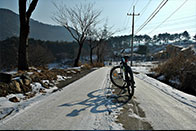
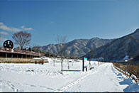
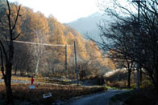
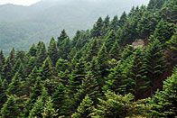
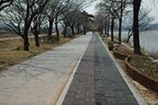

-
 골지천과 벼랑길 숲속정선 꽃벼루 코스
송천과 골지천이 어우러진다 하여 붙여진 아우라지를 아시나요? 정선아리랑의 발상지이기도 한 아우라지는 옛날 한양까지 뗏목으로 목재를 운반하기도 하고 각지의 뱃사공들이 몰려들어 아리랑 소리가 끊이지 않았던 곳입니다.
-
 물의 맑은 기운 가득한싱그러운 화천 산소길 코스
추위를 즐기는 자가 이긴다! 세계 4대 겨울축제로 유명한 화천 산천어축제가 성큼 다가왔습니다. ‘얼지 않은 인정, 녹지 않은 추억’이라는 주제를 가지고 2017년을 맞이하면서 열리는 2017 화천 산천어축제입니다.
-
 두 개의 산허리를 감아 도는 힘찬 원주 라이딩 코스
연세대 원주 캠퍼스를 출발점으로 삼아 왼쪽으로는 1,087m의 백운산과 오른쪽으로는 700m의 덕가산 임도를 도는 코스입니다. 두 개의 산허리를 감아 도는 원주 라이딩 코스를 힘차게 달려보세요.
-
 낙엽송과 잣나무 숲으로 달리는춘천 당림리 코스
천 서면에 위치한 당림리는 마을 지형의 대부분이 완만한 구릉성 지대로 이루어져 있어 마음껏 라이딩하기에 좋은 코스입니다. 비가 오거나 겨울에 얼었던 흙이 녹은 상태가 되면 자전거는 흙 범벅이 되니 주의하여 하고, 덕두원 마을까지의 급경사에서도 주의해야 합니다. 마을 곳곳에 산지가 분포해 있어 멋진 조망은 볼 수 있는 당림리 코스를 힘차게 달려볼까요?
-
춘천~양구 1박2일닭 요리 원정코스
주말을 맞아 춘천과 양구 쪽을 천천히 돌아보기로 했습니다. 맛집을 찾다 보니 춘천은 닭갈비가, 양구는 오골계가 유명하다니 마치 닭 요리 원정대가 되어버린 듯 하는 느낌이 들었습니다.
-
 동해안길과 경포호수를 라이딩강릉 경포호수 코스
강원도 중 강릉과 화천은 자전거길이 잘 조성되어 있습니다. 특히 강릉은 해변을 끼고 라이딩을 하기에 시야가 탁 트이고 볼거리와 먹거리가 가득한 곳입니다. 선선한 가을바람과 함께 바다공기를 즐기면서 여유로운 시간을 보내기에 안성맞춤 코스입니다. 지금 달려볼까요?